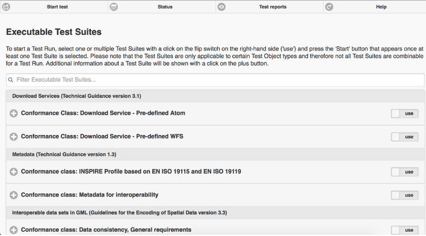

ETF¶
ETF is an open source testing framework for validating data and APIs in Spatial Data Infrastructures (SDIs). It is used by software solutions and data providers to validate the conformity of geospatial data sets, metadata and APIs.
Ohjelmistosta¶
Goals in designing the ETF software were to create test reports that are user-friendly and self-explanatory as well as to be able to validate large amounts of data, which can be several hundred GB in size. In order to cover different validation tasks and present them in a unified report, the architecture is modular and different test engines can be used. Currently the following test engines are supported: SoapUI for testing web services, BaseX database for testing XML data, TEAM Engine to validate WFS and OGC Web APIs using the OGC CITE tests, NeoTL Engine for testing WFS, OGC Web APIs and datasets.
ETF is the underlying framework used by the INSPIRE Reference Validator to validate metadata, datasets and services against the INSPIRE requirements. ETF is also used extensively in Germany by the Surveying Authorities of the Laender to validate their datasets. Other European Union (EU) Member States are also reusing the ETF to allow their data providers to test resources against national requirements. Finally, some software tools include validation based on the ETF API in their workflow.
{kind=link}
Keskeiset ominaisuudet¶
- Testable resources
datasets (up to multiple hundreds GB): GML
metadata: XML
view services: WMS/WMTS
download services: Atom, WFS, WCS, SOS
catalogue services: CSW
- Access
web-based user interface
REST API
OpenAPI Specification
Java client library
- Supported test engines
SoapUI for testing web services
BaseX for testing sets of XML documents
TEAM Engine to support CITE tests developed using TestNG
NeoTL for testing OGC WFS and OGC APIs (in development)
- Test reports
user-friendly and self-explanatory
downloadable in HTML, XML and JSON
Lisätiedot¶
Website: https://github.com/etf-validator
Licence: EUPL 1.2
Software Version: 2.0.0
Supported Platforms: Windows, Linux
API Interfaces: REST API, OpenAPI Specification, Java client library
Support: https://github.com/etf-validator/etf-webapp/issues
User manual: https://docs.etf-validator.net/v2.0/User_manuals/Simplified_workflows.html
Administrator manual: https://docs.etf-validator.net/v2.0/index.html#_administrator_manuals
Developer manual: https://docs.etf-validator.net/v2.0/index.html#_developer_manuals
Muista
This project is only included on the OSGeoLive virtual machine disk (VMDK)